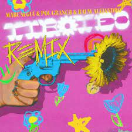

Tiroteo Remix

singers:
- Marc Segui
- Rauw Alejandro
- Pal Granch
written by:
- Kofi Bæ
- Colla Sensei
- Kenobi Sensei
- Xavibo
- Andrés Goiburo
- Rauw Alejandro
- Pal Granch
- Marc Segui
My Favorite Rauw Alejandro song! I love the vibe of the song.
Produced by Andrés Goiburo
Released on April 1,2021
My favorite lyrics:
- "discutir contigo es como un tiroteo"
-
This is one of my favorite lyrics because why are you arguing with me im literally always right?!
I'm jk I don't like to argue so the lyric is basically saying that arguing is a bad thing.
- "desde que tu te has ido no dan gracia los chistes"
- Why are you happy with out me?!